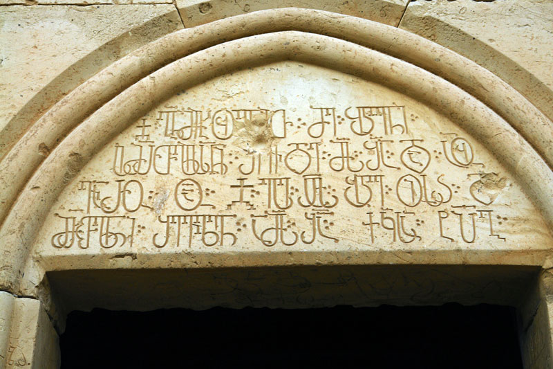
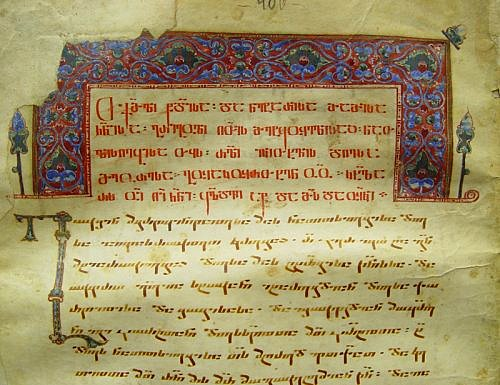
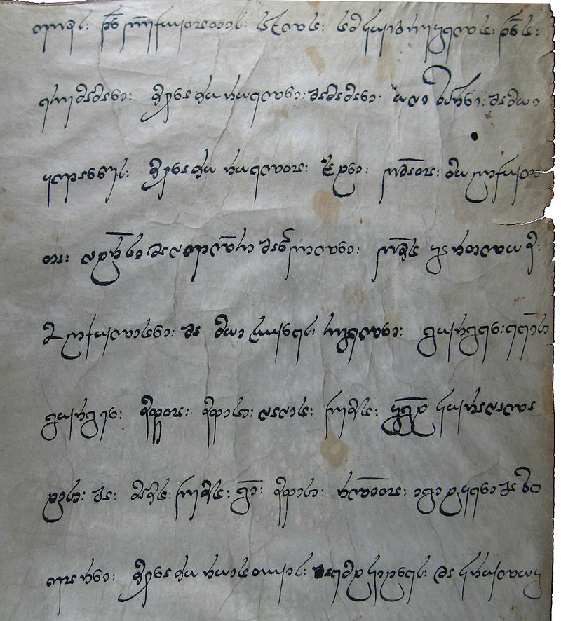

<!DOCTYPE html>
<html>
  <link rel="stylesheet" href="styles/style.css" />
  <title>Kartuli</title>
  <meta lang="ka" />
  <meta charset="UTF-8" />
</html>
<body>
  <head>
    <p id="title">ქართული ენა</p>
    <div class="images1">
      
      
      
    </div>
  </head>
  <main>
    <p id="text1">
      "და ესე ფარნავაზ იყო პირველი მეფე ქართლსა შინა ქართლოსისა ნათესავთაგანი.
      ამან განავრცო ენაჲ ქართული და არღარა იზრახებოდა სხუაჲ ენაჲ ქართლსა შინა
      თჳნიერ ქართულისა, და ამან შექმნა მწიგნობრობაჲ ქართული"
    </p>
    <table>
      <tr>
        <th>ასომთავრული</th>
        <th>ნუსხური</th>
        <th>მხედრული</th>
      </tr>
      <tr>
        <td id="as">ა</td>
        <td id="nusx">ა</td>
        <td id="mxed">ა</td>
      </tr>
      <tr>
        <td id="as">ბ</td>
        <td id="nusx">ბ</td>
        <td id="mxed">ბ</td>
      </tr>
      <tr>
        <td id="as">გ</td>
        <td id="nusx">გ</td>
        <td id="mxed">გ</td>
      </tr>
    </table>
    <p id="text2">
      ქართული დამწერლობა შედგება სამი ისტორიული სახისაგან, სისტემისაგან:
      ასომთავრული (ხუცური ასომთავრული, მრგვლოვანი, ასომთავრული), ნუსხური
      (ხუცური, ნუსხა-ხუცური, კუთხოვანი) და მხედრული. თითოეულ მათგანს თავისი
      გრაფიკული დამახასიათებელი სტილი აქვს, მაგრამ ასოთა მოხაზულობათა
      ცვალებადობის თვალსაზრისით ნუსხური დამწერლობა ასომთავრულის განვითარების
      შედეგია, ხოლო მხედრული — ნუსხურისა. ეს ცვლილებები თავის მხრივ განსაზღვრა
      სწრაფი, გამარტივებული წერისაკენ მისწრაფებამ, რასაც წიგნზე მზარდი
      მოთხოვნილება განაპირობებდა. ქართული დამწერლობის ტიპიზაცია იყენებს სამი
      ქართული დამწერლობის ცნებას.
    </p>
  </main>
  <footer>
    <div class="foot1">
      <label for="tellus">მოგვწერეთ რას ფიქრობთ</label>
      <input type="text" name="" id="tellus" />
      <input id="send1" type="button" value="გაგზავნა" />
    </div>
  </footer>
</body>
